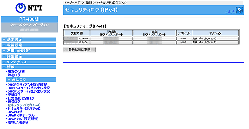

| 本商品が起動直後からメモリ上に蓄積しているセキュリティに関するログの内容が表示されます。 本商品は、セキュリティに関して以下の不正アクセスを検出することができます。 |
|
|
|
|
|
| ※「Web設定」画面に表示されているボタンについての説明は こちら | |
|  |
| ［セキュリティログ（IPv4）］ | セキュリティログは以下のようなパケットの受信記録です。
ログは最新のものから順に表示されます。 時刻情報が取得できない場合には、本商品起動時点を0時とする相対時刻が表示されます。 時刻情報が取得できた場合には、絶対時刻が表示されます。 |
| セキュリティログの受信時間を表示します。 | |
| 送信元IPv4アドレスとポート番号を表示します。 | |
| 宛先IPv4アドレスとポート番号を表示します。 | |
| プロトコルを表示します。 | |
| アクション（破棄［種別］）を表示します。 | |